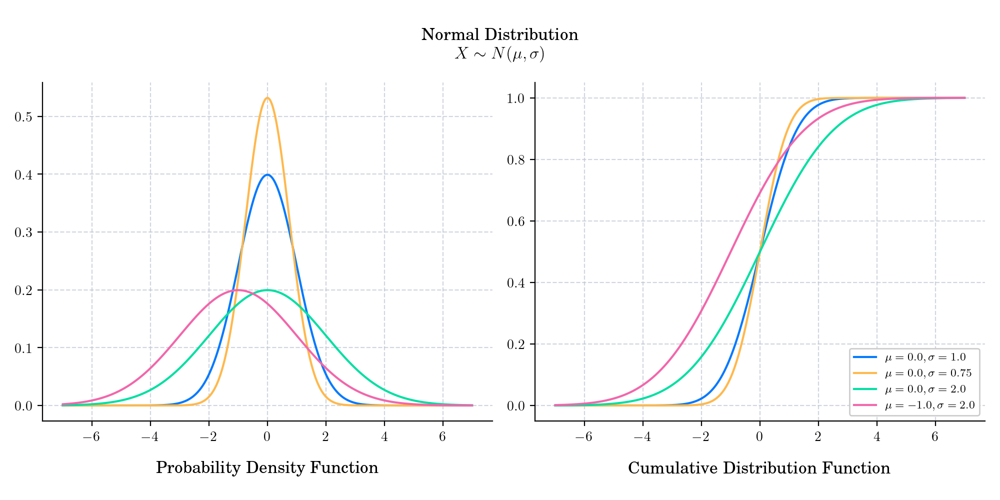
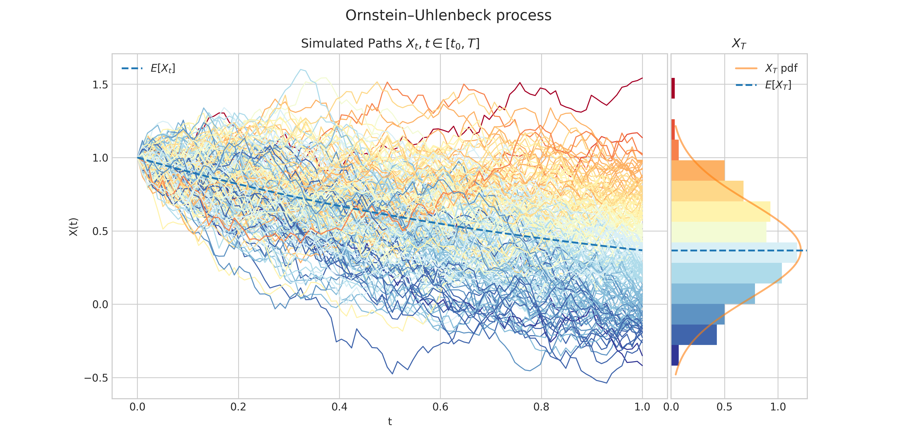
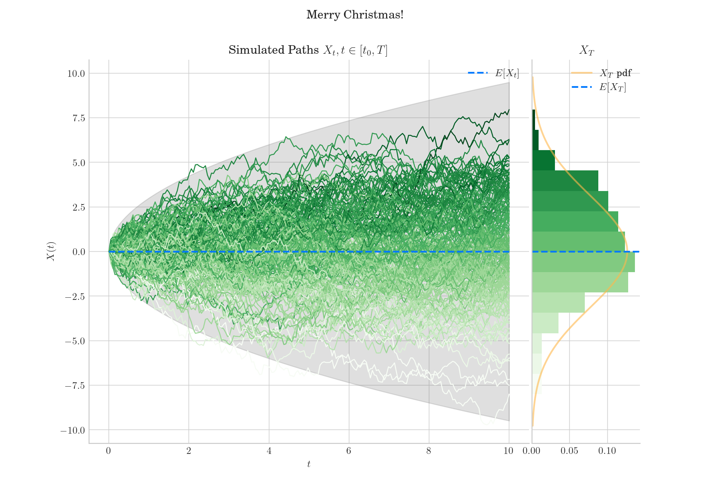

Day 24 : Normal Distribution#
The normal distribution, also known as the Gaussian distribution after German mathematician Carl Friedrich Gauss, is probably the most popular probability distribution. It has became ubiquitous in many areas of knowledge and most people recognise its familiar bell-shaped curve. It has support in \((-\infty, \infty)\) and is defined by two parameters. The shape parameter \(\mu\) is the mean or expectation of the distribution (and also its median and mode!), while the scale parameter \(\sigma\) is its standard deviation.

Its probability density function is given by
Its cumulative distribution function is give by
where \(\hbox{erf}\) denotes the error function.
🔔 Random Facts 🔔#
It is sometimes informally called a bell curve. However, many other distributions are bell-shaped (such as the Cauchy, Student’s t, and logistic distributions).
About 68% of values drawn from a normal distribution are within one standard deviation σ away from the mean; about 95% of the values lie within two standard deviations; and about 99.7% are within three standard deviations. This popular fact is known as the 68-95-99.7 (empirical) rule, or the 3-sigma rule.
The Gaussian distribution belongs to the family of stable distributions which are the attractors of sums of independent, identically distributeddistributions whether or not the mean or variance is finite. Except for the Gaussian which is a limiting case, all stable distributions have heavy tails and infinite variance. It is one of the few distributions that are stable and that have probability density functions that can be expressed analytically, the others being the Cauchy distribution and the Lévy distribution.
In standardized testing, results can be made to have a normal distribution by either selecting the number and difficulty of questions (as in the IQ test) or transforming the raw test scores into output scores by fitting them to the normal distribution. For example, the SAT’s traditional range of 200–800 is based on a normal distribution with a mean of 500 and a standard deviation of 100.
Today’s bonus consists of simulation of a Brownian motion and an Ornstein–Uhlenbeck process. Both processes have marginal densities normally distributed.

